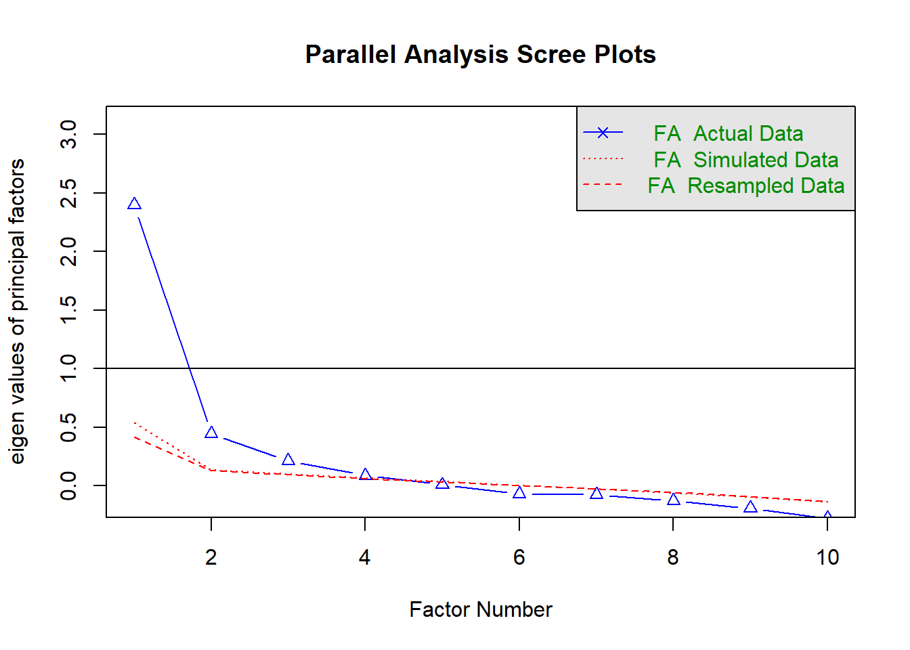

Last updated: 2018-08-16
workflowr checks: (Click a bullet for more information) ✖ R Markdown file: uncommitted changes
The R Markdown is untracked by Git. To know which version of the R Markdown file created these results, you’ll want to first commit it to the Git repo. If you’re still working on the analysis, you can ignore this warning. When you’re finished, you can run wflow_publish to commit the R Markdown file and build the HTML.
✔ Environment: empty
Great job! The global environment was empty. Objects defined in the global environment can affect the analysis in your R Markdown file in unknown ways. For reproduciblity it’s best to always run the code in an empty environment.
✔ Seed:
set.seed(20180802)
The command set.seed(20180802) was run prior to running the code in the R Markdown file. Setting a seed ensures that any results that rely on randomness, e.g. subsampling or permutations, are reproducible.
✔ Session information: recorded
Great job! Recording the operating system, R version, and package versions is critical for reproducibility.
✔ Repository version: 6fdb243
wflow_publish or wflow_git_commit). workflowr only checks the R Markdown file, but you know if there are other scripts or data files that it depends on. Below is the status of the Git repository when the results were generated:
Ignored files:
Ignored: .Rhistory
Ignored: .Rproj.user/
Ignored: code/.Rhistory
Untracked files:
Untracked: analysis/manuscript.Rmd
Untracked: code/desigualdad_colombia.R
Untracked: code/desigualdad_colombia.R.RData
Untracked: data/SDO_2_UV.por
Untracked: data/SDO_2_UV.sav
Untracked: data/data2_raw.sav
Untracked: docs/figure/
Untracked: output/Tablas.xlsx
Untracked: output/questionnaire_study1.pdf
Untracked: output/questionnaire_study2.pdf
Untracked: redis_measure.Rproj
Unstaged changes:
Modified: analysis/_site.yml
Deleted: prueba_3.Rproj
[Problem] The increasing levels of economic inequality have had a profound impact on societies. Indeed, more unequal countries tend to report worse indicators in well-being issues (e.g. health, security, education), than less unequal countries (Wilkinson & Pickett, 2015, 2017). To reduce economic inequality and its pernicious effects, more redistributive measurements are needed. That is, to implement taxes and social transfer policies that redistribute resources within a society (OECD, 2014; World Inequality Report, 2017).
[Justification 1: different responses of redistribution] Despite of the benefits of reducing economic inequality, and the general public desire to do so (Norton & Ariely, xxxx), support for redistribution is not always held by the public. Thus, though people might agree on having more effective government’s actions to reduce economic inequality, they display a general aversion toward raising taxes (Bartels, 2005), or might disapprove government spending on social services (Fong, 2001). Thus, support for redistribution is not only a general desire to reduce economic inequality, but also implies a procedural dimension regarding how to achieve such redistribution of resources. Indeed, McCall & Kenworthy (2009) posited that individuals might demand more government redistribution by implementing more transfers to the poorer, by raising taxes to the richer; or they might just desire other government actions aimed to reduce inequality of opportunity by providing more services like social insurance, labour regulations. In this vein.
[Justification 2: literature overrepresent a desire for, rather than how to redistribute] However, empirical research use to operationalize support for redistribution by a single item that reflect the general desire for the government to reduce economic inequality (e.g. The government should reduce the income differences between those with higher incomes and those with lower incomes), without saying anything about how to do so. Other indicators to operationalize support for redistribution focus on attitudes toward the welfare state (references), social spending (references), and behavior (references). Thus, researchers tend to use a quite diverse set of items to measure support for redistribution that might hamper direct comparison among indicators. Whilst people might agree that economic inequality should be reduced (desire), they might disagree about how to do so (procedures), which might reflect different dimensions of the same construct: a higher demand for redistribution among the well-off (taxes), or a higher provision for the worst-off (opportunities).
[Proposal: Aim of the paper] The aim of this research is to provide empirical evidence about the dimensionality of support for redistribution. In line with McCall & Kenworthy (2009), we argue that support for redistribution can be focused on the role of the government to redistribute resources (e.g. progressive taxation); or on the provision of more opportunities to the disadvantaged (e.g. social spending). To this end, we conducted two studies. In study 1 we explored the dimensionality of the items that we collected from the literature. In study 2, we confirmed the two-dimension structure of the measure, and provide evidence about the relationship of each dimension to perceptions and ideologies of inequality.
[Redistribution 1: Meanings] From an economic perspective, redistribution can be defined as the use of tax and transfer policies aimed to reduce economic inequality (Luebker, 2014). This implies the distribution of benefits and taxes according to the economic position of taxpayers, which mean that redistribution becomes individually more expensive to the wealthy than to the poorer (Dimick, 2018). On the other hand, redistribution can be defined from an equality of opportunity perspective, which means that economic, social and cultural resources should be distributed in a way that equalizes the opportunities of everyone to get ahead (Roemer, 1998). In this sense, redistribution implies a level-the-playing field principle, by which outcomes will be determined by individual merit, not by individual background. However, redistribution implies both perspectives, since effective strategies to reduce economic inequalities demand integral and multidimensional government interventions aimed to provide more capabilities and resources to the public (see Atkinson, 2015).
[Redistribution 2: different from other related constructs - welfarism] Support for redistribution is related to attitudes toward welfare state policies, but is not reducible to them. Redistributive policies represent a procedural mechanism that enhance aggregate welfare (Kelly & Enns, 2010); whereas welfare policies imply a whole institutional framework that articulates the responsibility of the government for a range and degree of social provision that redistribute income, risks and services (Mau, 2003). Thus, redistribution focuses on the allocation of means, goods, and opportunities in a given society, and represent a particular dimension of the welfare state (Roosma, 2012).
[Redistribution 3: dimensions] Redistribution involves two separate propositions, a demanding side, related to redistributive voters preferences; and a supply side, related to the provision of public policies to meet people’s demands (McCarthy & Pontusson, 2009). Individuals’ support for redistribution is embedded in the demanding side, and can also reflect different dimensions according to how individuals think that resources should be distributed, that is, who should contribute to and benefit from redistribution (Zimmerman, 2016). Thus, support for redistribution implies a procedural perspective about who should redistribute (e.g. the government), how to redistribute the resources (e.g. taxation, social spending), and who is going to benefit (e.g. all citizens, the disadvantaged).
[Redistribution 4: different implications of dimensions of redistribution] Indeed, people’s support for redistribution is different when framed as raising taxes, or as providing people in need. For instance, raising taxes by a progressive taxation system is generally an unpopular policy, since people do not know how it works and benefits the whole society (including the better-off), and just stress the individual costs of paying more taxes (Bartels, 2003). But, at the same time, people facing higher socioeconomic risks tend to demand a stronger government intervention to provide social insurance (reference). Thus, each dimension of support for redistribution might be driven by different social psychological processes: whilst support for progressive taxation might be guided by self-interest (e.g. well-off would oppose to redistribution), support for social spending might be related to ideological beliefs of fairness (Alesina & La Ferrara, 2005), attributions of poverty (Kluegel & Smith, 1986), or prosocial behaviour (reference).
[Measures of redistribution: dimensions] Research on support for redistribution have been mainly conducted by using indicators from large scale surveys focusing on the role of the government, or on the taxation system. Although, both set indicators have been effectively used in the literature, they also have some shortcomings. On the one hand, asking for the role of the government seem to be more related to who should reduce income inequality, but not on the kind of redistributive policies to implement. On the other hand, support for progressive taxation is more related to how resources should be collected and redistributed, but it did not mention how they will be invested.
[Measurs of redistribution: indicators] As shown in Table 1, there is a wide variety of indicators aimed to measure support for redistribution. Since there is no a validated measure of attitudes toward redistribution shared in the literature, researchers use single indicators that are widely used in international survey data. In our literature review, we found that measures of support for redistribution mainly stress the role of the government, whether to increase social spending, or by implementing a progressive taxation system. In addition, researchers also use other kind indicators to account for redistribution such as the general judgment about the current redistributive structure in a given context and the desired to change it; the general acceptance of economic inequality; the endorsement of specific social policies; or even by using left-right political ideology (see Table S1 at the supplementary material for full information of sources, topics, and items’s wording).
[Measures of redistribution: overview and link to the aim of the research] Considering the wide variety of indicators researchers use to measure support for redistribution, direct comparison among the literature can be challenging. However, McCall & Kenworthy (2009) propose that support for redistribution can be summarised as the endorsement of public policies aimed to redistribute economic resources, or as the government actions oriented to provide more opportunities to people in need. Thus, the aim of this study is to provide empirical evidence about this two-dimension structure of a measure of support for redistribution; and to show how each dimension is differently associated with a set of individual variables.
| Table 1. | |||
|---|---|---|---|
| Main topics of the indicators aimed to measure support for redistribution | |||
| Topic | Amount of coded indicators | Item’s examples | Sources |
| Social spending | 119 | * Do you support more policies to increase the opportunities for children born in poor families and to foster more equality of opportunity, such as education policies? (Alesina, 2018)* Government should increase benefits for the poorest, even if it means tax rises for everyone else (Bamfield & Horton, 2009)* Should social benefits be cut in the future, should things stay as they are, or should social benefits be extended? (Haack & Sieweke, 2017)* The government should provide a decent standard ofliving for the unemployed (ISSP, 2009; Steele, 2015; Kim & Lee, 2018) | Alesina (2018), Bamfield & Horton (2009), Boarini (2009), Fong (2001), Haack & Sieweke (2017), Kim & Lee (2018), Kteily et al. (2016), Laurin et al. (2013), Lierse (2018), Linos (2003), McCall et al. (2017), McCall Kenworthy (2009), McCarthy& Pontusson (2011), Pratto et al (1998), Rodriguez-Bailon et al. (2017) Scrugs & Hayes (2017), Shnabel et al. (2016), Steele (2015), van der Toorn (2015), van Oorschot & Meuleman (2012), Zimmerman & Reyna (2013), Encuesta Nacional COES - ENACOES (2016), Eurobarometer 72.1 Poverty social exclusion and economy (2010), Eurobarometer 74.1 (2013), Eurobarometer 81.5 (2015), General Social Survey (2015), International Social Justice Project - ISJP (2006), International Social Survey Programme - ISSP (2009) |
| Taxation | 63 | * Government should increase tax at the top to ensure they contribute more to public services (Bamfield & Horton, 2009)* Do you think people with high incomes should pay a larger share of their income in taxes than those with low incomes, the same share, or a smaller share? (ISSP, 2009; ENACOES, 2016; Kuhn, 2012, 2015)* The government should increase taxes to give more help to the poor. (McCall et al., 2017)* High-incomee earners should pay more tax than low income earners (Rodríguez-Bailón et al., 2017) | Alesina (2018), Bamfield & Horton (2009), Fong (2001), Kerr (2014), Kuhn (2012), Kuhn (2015), Kuzyemko et al (2015), Lierse (2018), McCall et al. (2017), McCall Kenworthy (2009), McCarthy& Pontusson (2011), Pratto et al (1998), Rodriguez-Bailon et al. (2017), Scrugs & Hayes (2017), Weakliem (2013), Zimmerman & Reyna (2013), Encuesta Nacional COES - ENACOES (2016), Eurobarometer 72.1 (2010), Eurobarometer 74.1 (2013), Eurobarometer 81.5 (2015), General Social Survey (2015), International Social Survey Programme - ISSP (2009), Latin American Public Opinion Project (2014), New Zealand Attitudes and Values Survey (2009-2018), Pew Research Center (2014) |
| Government role | 59 | * It is the responsibility of the government to reduce the differences in income between people with high incomes and those with low incomes (ISSP, 2009; Choi, 2018; Kim & Lee, 2018; McCall et al., 2017)* The government should take measures to reduce differences in income levels. (Dimick, 2018)* To reduce the inequality of opportunities between children born in poor and rich families, thegovernment has the ability and the tools to do: Nothing at all; Not much; Some; A lot (Alesina et al., 2018) | Alesina (2018), Bamfield & Horton (2009), Boarini (2009), Choi (2016), Dallinger (2010), Dimick (2018), Duman (2013), Fong (2001), Gimpelson & Treisman (2017), Gonthier (2016), Guillaud (2013), Isakson (2009), Jaime-Castillo et al (2018), Jedinger (2018), Kerr (2014), Kim & Lee (2018), Kuhn (2009), Kuhn (2012), Kuhn (2015), Lierse (2018), Linos (2003), McCall et al. (2017), McCall Kenworthy (2009), Newman (2014), Page (2016), Rosma (2012), Schmidt-Catran (2014), Steele (2015), van Heuvelen (2017), van Oorschot & Meuleman (2012), Zimmerman & Reyna (2013), Encuesta Nacional COES - ENACOES (2016), Eurobarometer 72.1 (2010), Eurobarometer 74.1 (2013), Eurobarometer 81.5 (2015), European Social Survey Wave7 (2014), International Social Justice Project - ISJP (2006), International Social Survey Programme - ISSP (2009), Latin American Public Opinion Project (2014), Latinobarómetro (2013), World Values Survey (2012) |
| Redistribution structure | 36 | * Income distribution in Colombia should be more equitable (Coppini et al. 2018)* There is a need to redistribute wealth from the top to the bottom in this society (Kteily et al., 2016)* The (NATIONALITY) Government should ensure that the wealth of the country is redistributed in a fair way to all citizens (Eurobarometer 74.1, 2013) | Coppini et al (2018), Fong (2001), Haack & Sieweke (2017), Jedinger (2018), Kteily et al. (2016), McCall et al. (2017), van Oorschot & Meuleman (2012), Encuesta Nacional COES - ENACOES (2016), Eurobarometer 72.1 (2010), Eurobarometer 74.1 (2013), International Social Justice Project - ISJP (2006) |
| Inequality acceptance | 16 | * Differences in income in [this country] are too large. (Dallinger, 2010)* Do you think that the fact that some people in the United States are rich and others are poor represents a problem that needs to be fixed or Is an acceptable part of our economic system? (Fong, 2001)* Inequality in the distribution of wealth is unjust. (McCall et al., 2017)* We need larger income differences as incentives for individual effort versus Incomes should be made more equal. (Wulfgramm & Starke, 2016) | Bamfield & Horton (2009), Dallinger (2010), Fong (2001), Kerr (2014), Kuhn et al (2017), McCall et al. (2017), Page (2016), Rodriguez-Bailon et al. (2017), Wulfgramm & Starke (2016), Eurobarometer 72.1 (2010), Eurobarometer 74.1 (2013) |
| Social policies | 12 | Extent of agreement toward policies such as:* A tie-breaker policy in which a minority applicant is selected over a White applicant when the two applicants are equally qualified. (Lowery, 2007)* Wage subsidies, whereby the government pays employers to hire people from disadvantaged groups, to increase the number of jobs for low-skill workers (Rodríguez-Bailón et al., 2017) | Alesina (2018), Lowery (2007), Rodriguez-Bailon et al. (2017), Shnabel et al. (2016) |
| Political ideology | 1 | In political matters, people talk of left and right. How would you place your views on this scale, generally speaking? | Iglesias et al. (2013) |
| Note: |
The aim of the current studies is to provide empirical evidence about the dimensionality of support for redistribution measurement. We argue that there are at least two different dimensions of support for redistribution, that might have different implications on how we conceptualize and operationalize the public preferences for redistribution. Researchers in social sciences usually use single-item indicators to measure support for redistribution; or include behavioral measures about how to redistribute resources (i.e. prosocial behavior, dictatorship paradigm, etc.). As suggested by McCall and McCarthy (2009) people might have different responses toward inequality, either by increasing the role of the government to reduce inequality; or by increasing other government actions oriented to provide people in need. Under this framework we compiled a set of indicators used in the literature to account for redistribution (see Table 1), and empirically modelled both factors. Then, in Study 1 we tested a set of 10 items related to different ways to measure redistribution, and conducted exploratory factor analysis to examine the factor structure of those items. In Study 2, we used the same indicators of support for redistribution in a different sample, and conducted confirmatory factor analysis to confirm that the dimensionality was held. In addition, we test the reliability of the measure and the association between dimensions of support for redistribution with individuals’ ideologies.
The aim of the study 1 was to explore the factor structure of a set of items aimed to measure support for redistribution. Participants should rate their level of agreement with several claims regarding how resources should be distributed in a society. These items were included at the end of a questionnaire used in another project related to ideologies and perceptions of inequality.
A total of 818 participants from the all the academic community of a public university in Colombia (students, academic, administrative and maintenance staff) responded to an open call to participante in a study about current social issues in Colombia (Mage = 29.77, SDage = 12.77, 54.58% female). Participants were contacted through the University communications office by sending them an email with an open invitation to participate in this study. The invitation said that everyone from the unviersity community could participate voluntarily, and that this study was being conducted for academic purposes, taking special care of anonymity and confidentility of their responses. If agreed, participants were redirected to a questionnarie uploaded in online platform (Qualtrics), and signed an informed consent to continue with the study. Data was collected during April 2018.
Support for redistribution: Participants completed a ten-item measure of support for redistribution (M = 5.21, SD = .85, alpha = .737) we constured based on the literature review about measurmens of redistribution. These items covered survey items usually used in the literature to operationalize support for redistribution (i.e. “The government should reduce income differences between the rich and the poor”), as well as related research that used different proxys indicators (e.g. welfare attitudes, preferences for progressive taxation and social spending). Respondents should rate their level of agreement with each statement on a 7-point scale ranging from 1 “strongly disagree” to 7 “strongly agree”. Wording and descriptive statistics per item are presented in Table 2.
We conducted a descriptive item analysis (mean, starndard deviation, and skewness) and tested the reliability of the measurement (overa Chronbach’s alpha, alpha if deleted item, and item-test correlation). In order to examine the dimensionality of the scale, we conducted an exploratory factor analysis using principal-axis factor extraction with Minimum Residual procedure (minres) and varimax rotation, supported by Lavaan package (Rosseel, 2012) implemented for R software.
As can be seen in Table 2, most of the items mean-scores are over the technichal middle point of the scale (4), and are negatively skewed, which indicates that particpants scored mostly in the right (“agreement”) side of the scale. However, item 8 (“The government should increase taxes to provide more assistance to the most needed people”) performed differently, since participants tended to disagree in this issue. Additionally, when examining the reliability measures of the scale, we got that the alpha if this item is deleted does not change (alpha~if item-8 deleted~ = .736) and this item reported the lowest correlation with the overall scale (ritem8-scale = .325). Apart from this item, all the items contributed appropriately to the realibility of the measurement and the item-test correlation.
| Table 2. | |||||||||
|---|---|---|---|---|---|---|---|---|---|
| Item descriptive statistics and factor loadings | |||||||||
| Item | Mean | SD | Skew | Rx-j | alpha-x | Factor 1 loadings | Factor 2 loadings | h2 | U2 |
| 6. Existe una gran necesidad de redistribuir la riqueza de aquellos que tienen m?s, hacia aquellos que tienen menos. | 5.19 | 1.71 | -0.85 | 0.680 | 0.686 | 0.69 | - | 0.55 | 0.45 |
| 1. El Gobierno tiene la responsabilidad de reducir las diferencias de ingresos entre los que tienen m?s y los que tienen menos. | 5.44 | 1.62 | -1.02 | 0.556 | 0.707 | 0.67 | - | 0.47 | 0.53 |
| 7. No hay ninguna necesidad de cambiar la distribuci?n de ingresos econ?micos en Colombia (r) | 6.3 | 1.13 | -2.11 | 0.396 | 0.726 | 0.49 | - | 0.24 | 0.76 |
| 4. El Gobierno deber?a imponer mayores impuestos a las personas con m?s ingresos econ?micos. | 5.44 | 1.67 | -1.04 | 0.459 | 0.716 | 0.38 | - | 0.21 | 0.79 |
| 10. El Gobierno deber?a hacer todo lo posible para mejorar las condiciones econ?micas de los grupos m?s desfavorecidos. | 6.17 | 1.13 | -1.79 | 0.551 | 0.711 | 0.45 | 0.32 | 0.30 | 0.70 |
| 3. El Gobierno deber?a gastar m?s dinero en subsidios para los pobres. | 4.06 | 1.8 | -0.12 | 0.389 | 0.727 | - | 0.64 | 0.41 | 0.59 |
| 9. Las personas con m?s riqueza deber?an ayudar m?s a las personas m?s necesitadas. | 5.49 | 1.5 | -1.01 | 0.511 | 0.709 | - | 0.46 | 0.29 | 0.71 |
| 5. Se deber?an reservar cupos en universidades para las personas m?s desfavorecidas. | 5.42 | 1.61 | -1 | 0.381 | 0.726 | - | 0.38 | 0.18 | 0.82 |
| 8. El gobierno deber?a incrementar los impuestos para dar m?s ayudas a las personas m?s necesitadas. | 3.28 | 1.79 | 0.38 | 0.325 | 0.736 | - | 0.36 | 0.14 | 0.86 |
| 2. El Gobierno deber?a proporcionar un nivel de vida decente a las personas que est?n desempleadas. | 5.31 | 1.46 | -0.85 | 0.512 | 0.710 | 0.35 | 0.35 | 0.25 | 0.75 |
The Parallel Analysis suggested a three-factor solution, but inspecting the screeplot and the underlying topic of the items, it seems clearer to retain a two-factor structure for the items about support for redistribution. Thus, Factor 1 represents the idea that the government should redistribute resources by increasing taxes; and Factor 2, subscribes to the idea that the government should increase social spending and provide more assistance to people in need.
The two-factor model provided poor fit indices, X2(gl=26) = 154.74, p <. 001, RMSEA = .065; TLI = .883); which might be because of two items loading simultaneously on both factors (see Table 2). Examining the content of those items, we realised that they mixed the idea that the government should redistribute resources and should help the disadvantaged. Therefore, we decided to exclude those items because of their content combine the two ideas underlying each factor, which is likely to lead to a poor discriminant association with factors. Thus, we conducted another exploratory factor analysis using the same data, but excluding the two items loading on both factors. We found that model fit indices considerably improved X2(gl=13) = 56.72, p< .001, RMSEA = .054; TLI = .929).

In Study 1, exploratory analyses provided us with evidence regarding the two-factor structure of pepole support for redistribution: either by endorsing the role of the government to redistribute and implement a progressive taxation system, or by increasing the social spending and assisting the disadvantaged. Thus, we decided to replicate these findings in a new sample, and provide further evidence of the implications of such dimensionality. The aim of Study 2 was to confirm the two-factor structure of the support for redistribution measurement, and test some of its associations with variables related to inequality justification, such as ideologies and socioeconomic status. This study is part of a broader project about perceptions of inequality and redistribution in Colombia.
In Study 2, 1837 participants from eight universities along different regions of Colombia participated in a research about perceptions of inequality and redistribution (Mage = 21.99, SDage = 5.46, 65.75% female; 81.24% were undergradutes, 11.49% were enrolled in work training, 3.73% reached up to high school, and 3.52% held postgraduate education). Participants responded to an open call delivered by each university to participate in a study about social issues in Colombia. Participants were informed about the goals and conditions of the research and, if agreed in taking the study, they signed an informed consent and accessed to an online questionnaire. Data was collected during May 2018.
Support for redistribution: Participants responded to eight items of support for redistribution selected from study 1 (alpha = .698). Likewise that in Study 1, respondents should rate their level of agreement with a set of statements by using a scale that ranged from 1 “strongly disagree” to 7 “strongly agree”.
Economic system justification: We used the short scale translated into Spanish by Jaume, Etchezahar, and Cervone (2012), which is composed by seven items regarding the legitimacy of economic inequalities in the society. Participants should rate each statement on a scale ranging from 1 “strongly disagree” to 7 “strongly agree” (alpha = .704). Some example items are: “the gap between social classes reflect the natural state of affairs of society” and “the economic position of people is a by-product of their achievements” (see supplementary material for wording of all the items).
Meritocracy: We translated and adapted into Spanish a scale of meritocracy used by Zimmerman and Reyna (2013) (alpha = .808). Participants were asked to indicate their support for several statements related to how people can get ahead in life by means of merit and hard work. Responses were rated in a seven-point scale from 1 “strongly disagree” to 7 “strongly agree”. Some example items are: “Hard working people achieve success in their life” and “In the Colombian society, getting ahead in life is possible for all the people that try it hard”.
Scale of political self-positioning: We used the left-right self-positioning scale, in which people should place themselves in a scale from 1 “Extremely left” to 7 “Extremely Right”.
Perceptions of inequality: We used several and different indicators of perceptions of inequality. First, we used the perceived income gap, which was operationalized as the ratio between the salary that participants think that earn a high status occupation (a CEO) and a low status occupation (blue-collar workers) in a large Colombian company. This ratio was log transformed in order to take care of some of the metric properties of this construct, as suggested by the social justice literature (Jasso & Thornblom, 2015). Second, we included the ideal income gap, which was computed in the same way that the perceived income gap, but instead of asking for the current earnings people perceive, they should indicate how much a high status occupation and a low status occupation shoud earn. Third, we included the general concern of economic inequality, which is a composed measure of two items to which people should evaluate if economic inequality was too large (“In general, economic income differences in Colombia are to large” and “Economic income differences that I see around me are too large”) (r~(df=1904) = .72, p < .001). Respondents have to use a 7-point scale from 1 “strongly disagree” to 7 “strongly agree”. Fourth, we used a single item to evaluate the frequency with which people perceive economic inequality in their daily life (i.e. “How frequent do you see situations concerning economic inequality in your daily-life”). This item was ranked in a 7-point scale from 1 “Never” to 7 “All the time”.
Socioeconomic Status: Participants indicated their approximate household income on a 10-point scale from 1 “Up to 781.242 pesos” (the minimum wage) to 10 “More than 7.021.000 pesos). Every point of the scale was increasing progressively by one Colombian minimum wage until it reached point 10. In addition, we used the McCarthur Scale to measure subjective socioeconomic status. For this indicator, people should rank themselves in a 10-point ladder, where the option at the bottom (1) represented the group of people with the lowest salaries, educational level, and occupational prestige of the society; whereas the option at the top (10) represented the group of people with the highest salaries, educational level, and occupational prestige of the society.
To replicate the two-factor structure of support for redistribution mesuremente, we conducted a confirmatory factor analysis with Maximum Likelihood (ML) estimator supported by Lavaan package (Rosseel, 2012) implemented for R software. We fitted a two-factor model, and evaluated the goodness of fit of two more alternative models. In addition, in order to test the convergent and divergent validity of the scale, we examined the relationship of each support for redistribution dimension to other constructs about perceptions of inequality, ideologies and socioeconomic status. We hypothesized that support for redistribution would be positively associated with perceived income gap (H1a), concerns of inequality (H1b), and frequency perception (H1c), but negatively associated with ideal income gap (H1d). As for ideological variables, we hypothesize that the more support for redistribution, the less endorsement of economic system justification (H2a), meritocracy (H2b), and political conservatism (H2c). Finally, following the self-interest hypothesis, it would be expected that support for redistribution is negatively associated with objective socioeconomic status (income) (H3a), subjective socioeconomic status (H3b), but positively associated with educational level (H3c).
We conducted confirmatory factor analyses to estimate the two-factor model of support for redistribution: the role of the government to redistribute resources by implementing progressive taxation; and the role of the government to provide more assistance to the disadvantaged. As displayed in Table 3, the two-factor model obtained poor fit indices. We inspected the modification indices for this model, and found that there were two correlated errors that affected the structure of the model (Modification Indexitem3-8 = 78.88). Thus, we estimated a two-factor model controlling for the correlated errors between items 3 and 8. Altough the model fit indices improved, we considered that both items differ conceptually. Indeed, both items are related to helping people in need, but item 3 depicts the idea that the government should provide more benefits, whereas item 8 mentions that the government should rise taxes to increase social spending. This distinction is also supported by the empirical performance of the item, since the average score was below the middle point of the scale (4) and positively skewed (Mitem8 = 3.33, SDitem8 = 1.82, Skewitem8 = .33), whereas all the other items scored above the middle point and were negatively skewed. Therefore, we specified a two-factor model discarding item 8. We found that fit indices for this model outperformed all models estimated above (see Table 3).
| Table 3. Goodness of fit statistics for two-factor models of support for redistribution | |||||||
|---|---|---|---|---|---|---|---|
| Model | X2 | df | p | RMSEA | CFI | TLI | SRMR |
| Two-factor model | 242.52 | 19 | .001 | .080 | .900 | .853 | .050 |
| Two-factor model (controlling for correlated errors item 3 and 8) | 164.23 | 18 | .001 | .067 | .935 | .899 | .041 |
| Two-factor model (discarding item 8) | 53.24 | 13 | .001 | .041 | .979 | .967 | .027 |
| Note: X2 = Chi square; df = degrees of freedom; p = p value; RMSEA = Root Mean Square Error of Approximation; CFI = Comparative Fit Index; TLI = Tucker-Lewis Index; SRMR = Standardized Root Mean Residual |
Once we have shown the two-dimension structure of the measure of support for redistribution, we tested how each dimension was associated with ideologies and perceptions about inequality, and with individual’s socioeconomic indicators. We found that dimensions of support for redistribution were associated with perceptions of inequality in different ways. Particularly, perceived income gap was positively associated with support for redistribution as reducing inequality by raising taxes, but not with support of redistribution framed as helping the disadvanted (H~1a). In addition, we also confirmed our hypohtesis that both dimensions of support for redistribution was positively related to concerns of inequality (H1b), and frequency perception of inequality (H1c), but negatively related to ideal inequality (H1d). Although these associations were consistent for both dimensions of support for redistribution, the effect size the dimension related to the government and progressive taxation was consisently higher than redistribution framed as social spending.
In addition, relations between support for redistribution and ideologies that justify inequality performed differently. First, the more individuals justified the economic system, the less support for the government to reduce economic inequality; whereas it was no associated with helping the disadvantaged (H2a). Second, meritocracy was negatively asociated with the government role to reduce inequalities and raise taxes, but positively associated with helping the disadvantaged (H2b). That is, the more meritocracy, the less demand for the the government to regulate the economy, but more demand for opportunities for people in need. Third, political ideology was negatively related to support for redistribution, so that reporting being more in the right (conservative) side of the political spectrum was linked to less support for both dimensions of support for redistribution (H2c).
Individuals’ socioeconomic indicator were also related to support for redistribution in the hypothesized way. Thus, the higher household income (H3a) and subjective socioeconomic status (H3b), the less endorsement of both dimensions of support for redistribution. On the other hand, we did not find support for H3c that posited that educational level would be relatd to more preference for redistribution. Indeed, there was a small negative correlation between educational level and support for social speding, such that the higher the educational degree, the less acceptance helping the disadvantaged.
| Table 4. Correlations, means and standard deviations between variables used in the study | ||||||||||||
|---|---|---|---|---|---|---|---|---|---|---|---|---|
| 1 | 2 | 3 | 4 | 5 | 6 | 7 | 8 | 9 | 10 | 11 | 12 | |
| 1. Redistribution (regulation) | â“ | |||||||||||
| 2. Redistribution (social spending) | 0.420*** | â“ | ||||||||||
| 3. Meritocracy | -0.137*** | 0.070** | â“ | |||||||||
| 4. Economic system justification | -0.168*** | 0.036 | 0.699*** | â“ | ||||||||
| 5. Political ideology (left-right) | -0.284*** | -0.076** | 0.143*** | 0.164*** | â“ | |||||||
| 6. Perceived income gap | 0.106*** | -0.037 | -0.107*** | -0.089*** | -0.033 | â“ | ||||||
| 7. Ideal income gap | -0.089*** | -0.092*** | 0.006 | 0.041 | 0.079** | 0.591*** | â“ | |||||
| 8. Concerns of inequality | 0.152*** | 0.117*** | -0.016 | -0.007 | -0.064* | 0.106*** | 0.012 | â“ | ||||
| 9. Frequency perception of inequality | 0.153*** | 0.142*** | -0.074** | -0.102*** | -0.100*** | 0.034 | -0.112*** | 0.154*** | â“ | |||
| 10. Income | -0.225*** | -0.092*** | 0.060* | 0.128*** | 0.168*** | 0.084** | 0.165*** | 0.017 | -0.126*** | â“ | ||
| 11. Subjective status | -0.235*** | -0.061* | 0.116*** | 0.155*** | 0.156*** | -0.030 | 0.089*** | -0.013 | -0.150*** | 0.581*** | â“ | |
| 12. Educational level | 0.025 | -0.058* | -0.012 | -0.045 | -0.010 | 0.097*** | 0.077** | 0.022 | 0.027 | 0.185*** | 0.086*** | â“ |
| Mean | 5.33 | 5.09 | 4.04 | 4.20 | 3.50 | 2.62 | 1.42 | 5.85 | 5.48 | 3.41 | 4.15 | 3.87 |
| Standard Deviation | 1.13 | 1.16 | 1.22 | 1.01 | 1.19 | 1.26 | 0.97 | 1.75 | 1.22 | 2.41 | 1.64 | 0.61 |
| Note: Pearson correlation with list-wise deletion; p<.001, p<.01, p<.05 |
Literature on support for redistribution is conducted by a wide variety of indicators that focus on different dimensions. Our contribution: We provide a kind of review of indicators and make it available at the supplementary material, and conclude there are two main dimenions.
Different processes at work: on the one hand the idea of redistribution of resources by taking away from the rich (self-interest, system justification, unfairness); does not necessarily indicate that people don’t want that others get ahead in life (social dominance, prejudice, attributions of poverty, fairness).
General items about redistributioin (i.e. the government should redistribute resources), do not say how to do so. Thus, it is important to be more specific when measuring attitudes toward redistribution.
We’re not arguing against the literature using single-item, but just adding that we might reduce error by being more accurate when we try to operationalize attitudes toward redistribution.
From an attitudinal point of view, people might be willing to help the disadvantage, or be in favor that the government should do something to reduce inequality. But, at the same time, they might be against of raising taxes, or be reluctant to give a bigger share of their incomes/wealth (becaused they deserved it, or feel entitled).
Given the effect size of the correlations, it might be expected that with smaller sample size, attitudes toward social spending were not significant. Thus, better to use the redistribution of economic resources indicators.
Then, a better comprehension of attitudes toward redistribution demands a distinction of the socio psychological processes that are intervening.
Mau, S. (2003). The moral economy ofwelfare states: Britain and Germany compared. London: Routledge
sessionInfo()
#> R version 3.5.1 (2018-07-02)
#> Platform: x86_64-w64-mingw32/x64 (64-bit)
#> Running under: Windows 10 x64 (build 17134)
#>
#> Matrix products: default
#>
#> locale:
#> [1] LC_COLLATE=Spanish_Spain.1252 LC_CTYPE=Spanish_Spain.1252
#> [3] LC_MONETARY=Spanish_Spain.1252 LC_NUMERIC=C
#> [5] LC_TIME=Spanish_Spain.1252
#>
#> attached base packages:
#> [1] stats graphics grDevices utils datasets methods base
#>
#> other attached packages:
#> [1] lavaan_0.6-2 labelled_1.1.0 sjlabelled_1.0.12
#> [4] workflowr_1.1.1 kableExtra_0.9.0 corrplot_0.84
#> [7] TMB_1.7.14 effects_4.0-2 carData_3.0-1
#> [10] lmerTest_3.0-1 haven_1.1.2 lsmeans_2.27-62
#> [13] nlme_3.1-137 sjPlot_2.5.0 dplyr_0.7.6
#> [16] xtable_1.8-2 texreg_1.36.23 psych_1.8.4
#> [19] stargazer_5.2.2 foreign_0.8-70 lme4_1.1-17
#> [22] Matrix_1.2-14
#>
#> loaded via a namespace (and not attached):
#> [1] httr_1.3.1 rprojroot_1.3-2 numDeriv_2016.8-1
#> [4] tools_3.5.1 backports_1.1.2 R6_2.2.2
#> [7] lazyeval_0.2.1 colorspace_1.3-2 nnet_7.3-12
#> [10] tidyselect_0.2.4 mnormt_1.5-5 emmeans_1.2.3
#> [13] compiler_3.5.1 git2r_0.23.0 rvest_0.3.2
#> [16] pacman_0.4.6 xml2_1.2.0 sandwich_2.4-0
#> [19] scales_0.5.0 lmtest_0.9-36 mvtnorm_1.0-8
#> [22] readr_1.1.1 ggridges_0.5.0 pbivnorm_0.6.0
#> [25] stringr_1.3.1 digest_0.6.15 minqa_1.2.4
#> [28] rmarkdown_1.10 R.utils_2.6.0 stringdist_0.9.5.1
#> [31] pkgconfig_2.0.1 htmltools_0.3.6 pwr_1.2-2
#> [34] rlang_0.2.1 rstudioapi_0.7 bindr_0.1.1
#> [37] zoo_1.8-3 R.oo_1.22.0 magrittr_1.5
#> [40] modeltools_0.2-22 bayesplot_1.6.0 Rcpp_0.12.18
#> [43] munsell_0.5.0 abind_1.4-5 prediction_0.3.6
#> [46] R.methodsS3_1.7.1 stringi_1.1.7 multcomp_1.4-8
#> [49] whisker_0.3-2 yaml_2.2.0 snakecase_0.9.1
#> [52] MASS_7.3-50 plyr_1.8.4 grid_3.5.1
#> [55] parallel_3.5.1 sjmisc_2.7.4 forcats_0.3.0
#> [58] crayon_1.3.4 lattice_0.20-35 ggeffects_0.4.0
#> [61] splines_3.5.1 sjstats_0.16.0 hms_0.4.2
#> [64] knitr_1.20 pillar_1.3.0 estimability_1.3
#> [67] codetools_0.2-15 stats4_3.5.1 glue_1.3.0
#> [70] evaluate_0.11 data.table_1.11.4 modelr_0.1.2
#> [73] nloptr_1.0.4 gtable_0.2.0 purrr_0.2.5
#> [76] tidyr_0.8.1 assertthat_0.2.0 ggplot2_3.0.0
#> [79] coin_1.2-2 broom_0.5.0 survey_3.33-2
#> [82] coda_0.19-1 viridisLite_0.3.0 survival_2.42-3
#> [85] tibble_1.4.2 arm_1.10-1 glmmTMB_0.2.2.0
#> [88] bindrcpp_0.2.2 TH.data_1.0-9This reproducible R Markdown analysis was created with workflowr 1.1.1